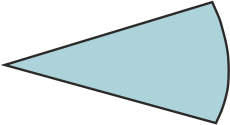
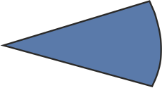
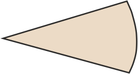

Релігійні організації на 2019 р.
Релігійні організації
(на 10 тис. населення)
| 0 - 4.0 | |
| 4.1 - 8.0 | |
| 8.1 - 12.0 | |
| 12.1 - 16.0 | |
| більше 16.0 |
Релігійні організації
(відсотки за конфесіями)
|  | православні |
|  | католицькі |
| протестантські | |
| інші християнські | |
| мусульманські | |
| іудейські | |
|  | інші |
Примітка. Інформація по АР Крим подана станом на початок 2014 р.